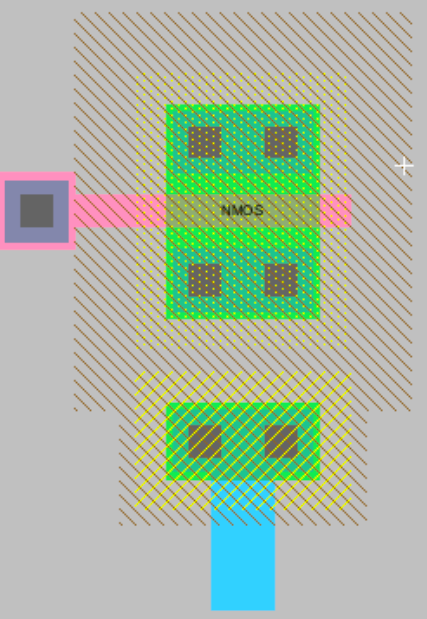
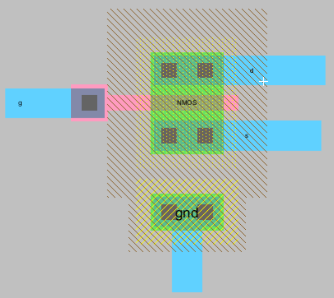
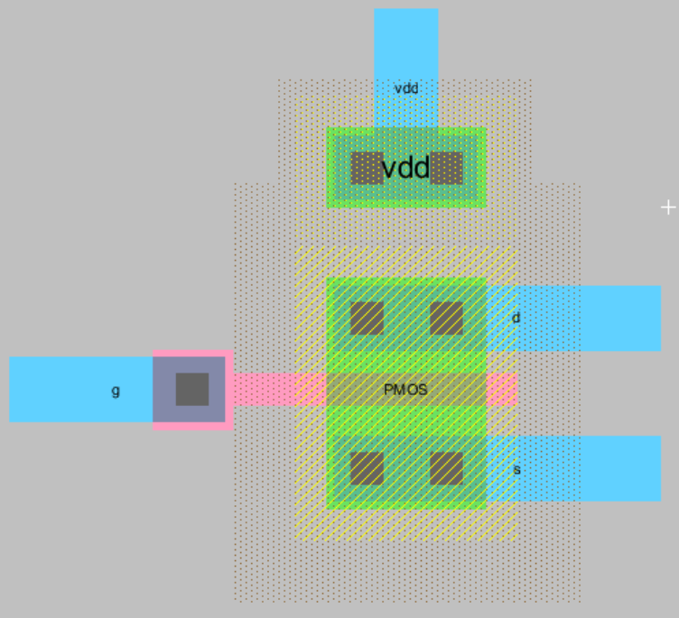
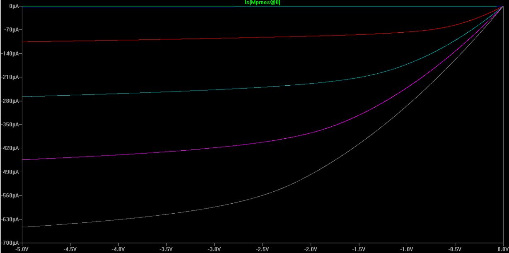
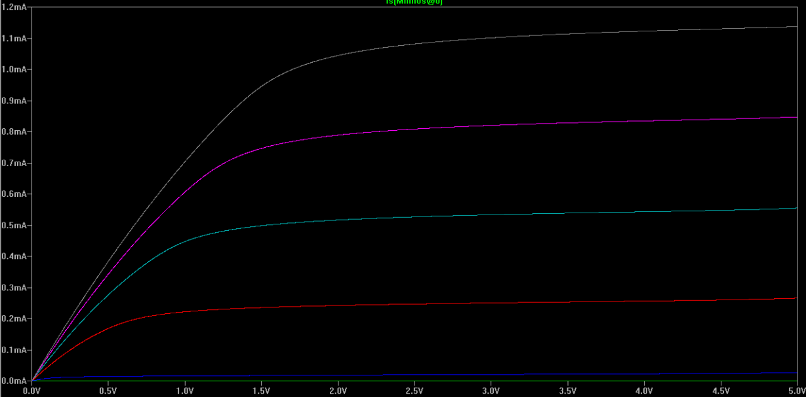

Laboratorio 0: Curvas del MOSFET¶
Este laboratorio es una introducción donde se simularán transistores PMOS y NMOS.
Contenidos del laboratorio
Objetivos¶
- Analizar la curva de corriente \(I_{ds}\) contra \(V_{ds}\), para distintos valores de \(V_{gs}\)
- Identificar las regiones de operación para los transistores NMOS y PMOS
Procedimiento¶
Simulación: curvas del transistor¶
Cree una celda en vista de layout como se muestra en la Figura 39 , deles un nombre significativo por ejemplo NMOS_IV_lay, como referencia puede consultar el tutorial, use \(W_n = 10𝞴\)
Figura 39 Vista de layout de un transistor NMOS
Establezca el modelo de Spice para el transistor
Presione la tecla F5 para verificar que no hayan errores en el layout
Exporte las terminales:
Figura 40 Transistor NMOS con terminales
Repita para el transistor PMOS:
Figura 41 Transistor PMOS con terminales
Cree una simulación para los dos transistores donde para 5 valores de \(V_{gs}\) se muestre la relación de corriente \(I_{ds}\) vs \(V_{gs}\), similar a las mostradas en la Figura 42 y la Figura 43
Figura 42 Curvas \(I_{ds}\) vs \(V_{gs}\) del transistor PMOS
Figura 43 Curvas \(I_{ds}\) vs \(V_{gs}\) del transistor NMOS
Identifique las regiones de operación para los transistores
{kind=link}
{kind=link}
{kind=link}
{kind=link}
{kind=link}